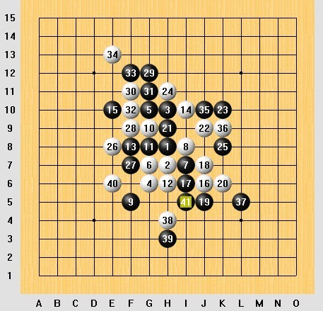
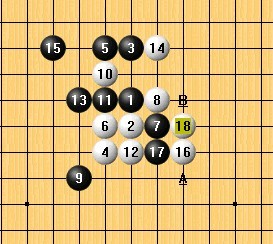
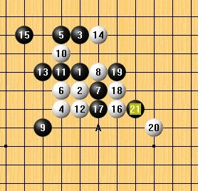
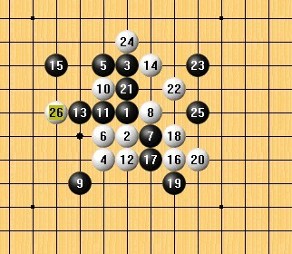

评棋之执黑韦振强【假先】执白祁观对局结果黑胜
#1 评棋之执黑韦振强【假先】执白祁观对局结果黑胜 作者：龍九囝 发表时间：2010-11-25 16:45:22
我选择的棋评是
1、 2010第七届浙江五子棋公开赛B组 【瑞星】
执黑 韦振强【假先】 执白 祁观 对局结果 黑胜

首先呢，来简单的介绍一下对局的两位选手，在印象中他们两人都是新一代超潜力的年轻棋手，希望日后能够冲出亚洲，面向世界，超越前辈，创造属于他们的时代。持黑方的是韦振强【假先】，首次出名应该是在代表棋心愉悦参加2010年的团体赛的时候，其特点高大帅气，之所以出名跟他明星脸有没有关系呢。白方的是祁观，这个祁姓很少啊，不知道是不是少数名族，是个大头硬汉，对五子棋的热情非常强烈，每次有比赛他都参加，按照他自己的话，只要能参加比赛坐几天火车也值得，是个让人感动的年轻人，其特点头大(脑发达）。
介绍完了棋手，让我们来看看他们的对局巴。
开局是瑞星，前11手不出意外按定式下，12手，白有很多选择，通常来说。这个是目前比较流行的，我是对瑞星没啥研究的，据说这个12手，通常就是乱战吧，瑞星没点研究，应该没人会开吧，更何况是实战比赛。

13手算是正常应招巴，大部分人都那么下，感觉也挺好的。 相信他们都对瑞星的变化非常的熟悉。14手感觉比较普通，这里出现了一个惊人的一手，别人对这手什么感觉，我不知道，但我个人觉得这手很"鬼“。 15手没看到人那么下过（我很少看棋的，呵呵）这里个人感觉非常的良好，16手肯定不能跟防，不然以黑方的实力，白应该没有活路，太多空间，太多联系点了，我不知道执白的祁观这个时候是什么心情，因为组织方只给了个棋谱，没给下每一步时间，不过估计这个时候应该是苦思巴，除非研究过了。 当然了最后走了这个A点。进攻就是防守，真理阿。
这个局面前不久，好像听过九指特地讲解过了这盘，没怎么认真听，印象中这里的A点正招，而B点其实是败招。

这里相信韦振强应该长考了才选A点的吧，或者其实研究过了，有备而来地，因为黑棋其实左边看起来更强大，很多活2，眠3点，这个就是技术，有时候靠的不一定是算力，也是一种习惯，下多了，自然就知道了。 会不会是这样呢？

这22手冲4连3，直接把黑棋上面盖掉，首先棋形方面稍微舒服了点，但还是得去防黑棋一手，这里先手丢了。

从27手开始，黑棋就采取不断进攻的方式，先攻上，后攻下。29手放招，后面白棋基本上是跟着黑走，黑边盖白的棋，顺便自己也让外势不断扩展。白棋这里应该很痛苦吧。赫赫
从27手开始白棋一直处于挨打的状态， 这里39手又来招盖顺便做杀，黑棋40手败了，这里不知道40手还有没有防，不过可以确定的是白棋这40手败了，黑棋41手连3VCT。 不过高手就是高手，41手后，就没了，就看到杀了？，直接认输了？唉，强大的计算力是棋手必不可少的。
［此帖子已被 龍九囝 在 2010-11-25 16:48:11 编辑过］
［ 掌棋宣传员 于 2010-11-25 19:11:43 时花20金币送鲜花一朵］
［ 掌棋宣传员 于 2010-11-25 19:11:45 时花20金币送鲜花一朵］
［ 掌棋宣传员 于 2010-11-25 19:11:46 时花20金币送鲜花一朵］
［ 掌棋宣传员 于 2010-11-25 19:11:47 时花20金币送鲜花一朵］
［ 掌棋宣传员 于 2010-11-25 19:11:49 时花20金币送鲜花一朵］
［ 掌棋宣传员 于 2010-11-25 19:11:50 时花20金币送鲜花一朵］
［ 掌棋宣传员 于 2010-11-25 19:11:51 时花20金币送鲜花一朵］
［ 被感动的人 于 2010-11-25 21:52:22 时花20金币送鲜花一朵］
［ 有志青年 于 2010-11-25 22:09:56 时奖励此帖[金币加 100 威望加1］
［此帖子已被 被感动的人 在 2010-11-26 15:56:18 编辑过］
#2 Re:评棋之执黑韦振强【假先】执白祁观对局结果黑胜 作者：第五象限 发表时间：2010-11-25 17:06:05
看不到图啊 目前只有楼主一人参与 冷清啊 不过肯定是拿大奖了 哈哈#3 Re:评棋之执黑韦振强【假先】执白祁观对局结果黑胜 作者：掌棋宣传员 发表时间：2010-11-25 19:20:40
这盘棋的15手我第一次在智运会对李磊用过一次,后来小牛学去了之后在我的基础上做的地毯谱已经比我研究的深多了,后来我还很奇怪这个棋他怎么会输的.小牛自己也说不清为什么白棋16开始选择骗杀强攻,而且是在对手没算清杀的情况下认输的...很灵异的一盘啊,至今我也想不通...［ 龍九囝 于 2010-11-26 23:55:18 时花20金币送鲜花一朵］
#4 Re:评棋之执黑韦振强【假先】执白祁观对局结果黑胜 作者：被感动的人 发表时间：2010-11-25 21:55:53
先送花一朵表示支持~
再反映个情况：本站图片要上传才能显示
本站帖子超过3小时就不能编辑了，楼主看到可以先回复帖子，然后编辑刚才回复的帖子就会出现“增加附件”，这时就可以上传图片了，我可以帮忙传到主帖上去。
很好奇这么灵异的一盘棋到底啥样子~
［此帖子已被 被感动的人 在 2010-11-25 22:02:06 编辑过］
［ 龍九囝 于 2010-11-26 23:36:47 时花20金币送鲜花一朵］
［ 龍九囝 于 2010-11-26 23:37:16 时花20金币送鲜花一朵］
［ 龍九囝 于 2010-11-26 23:39:50 时花20金币送鲜花一朵］
#5 Re:评棋之执黑韦振强【假先】执白祁观对局结果黑胜 作者：龍九囝 发表时间：2010-11-25 22:44:18
第一张图片跟第5张同样的图片。
第2张图片
第3张图
第4张
 麻烦了，实在不行，我在从新发个。
麻烦了，实在不行，我在从新发个。
 呵呵，这个怎么说呢，抛砖引玉？既然没人参加，我就多评几盘，呵呵，占据前3甲
呵呵，这个怎么说呢，抛砖引玉？既然没人参加，我就多评几盘，呵呵，占据前3甲
［此帖子已被 龍九囝 在 2010-11-25 22:52:59 编辑过］